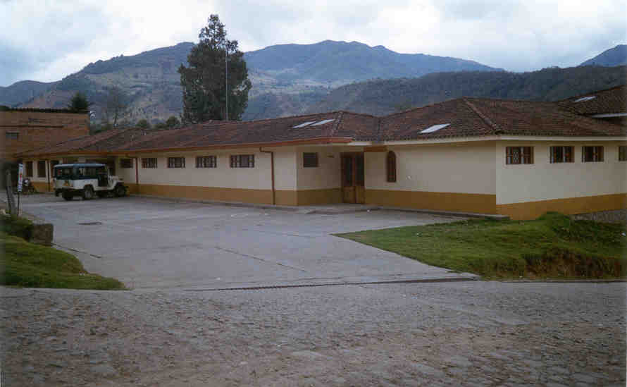

Location: Rural area of the Misak Indigenous Reservation, Silvia, Cauca.
Type of institution: Community health post with an indigenous approach.
Coverage: Mainly serves the Misak population, with services also available to nearby mestizo communities.
Care model: Intercultural, integrating Western medicine with ancestral Misak knowledge.
CTA Misak Salud stands out for its deep respect for the indigenous worldview, promoting dialogue between traditional and scientific medicine. This model seeks to strengthen the health autonomy of the Misak people, guaranteeing dignified, culturally relevant, and community-oriented healthcare.